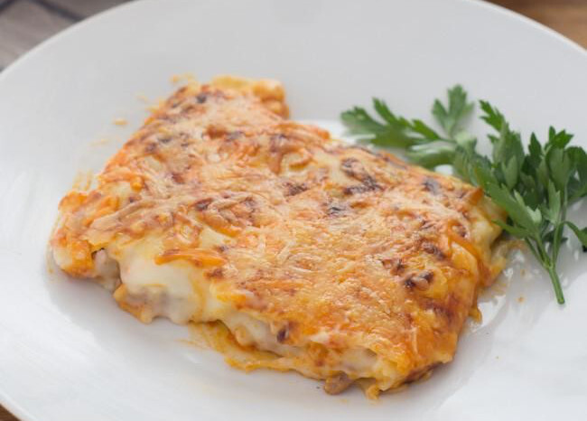

Home
Cannelloni

Description
This is my mother's cannelloni recipe. She always cook this meal with love. Cannelloni are filled with tuna and fried tomato.
The recipe's secret is the bechamel sauce she cooks. With this sauce she covers the cannellonis and cook all of that in the oven.
Ingredients (for 6)
- Tuna - 500 gr
- Onion - 1 unit
- Fried tomato - 200 ml
- Cannelloni dough - 30 units
- Olive oil
- Salt
- Wheat's flour - 80 gr
- Butter - 100 gr
- Milk - 1 litre
- Cheese - 200 gr
Steps
- First, we need to cut the onion and fry it in a pan. When the onion is cooked, we can add the tuna and the fried tomato and cook all together.
- Cook the cannelloni dough in salted water moving it with a spoon for 10 minutes. Then put them stretched into a table.
- Fill the cannelloni dough with the tuna and roll them.
- Put oven paper in the tray and sink it with fried tomato. Then put the rolls on the paper.
- Now we go with the mutton's mother. It's time to cook the bechamel sauce. Put the Butter and the Wheat's flour in a sauce pan and move. While moving, we need to add Milk slowly. The sauce needs to be creamy, that's the secret.
- Put the bechamel sauce on top the cannellonis and add cheese the last.
- Cook it for 15 minutes in the oven.
- Enjoy!